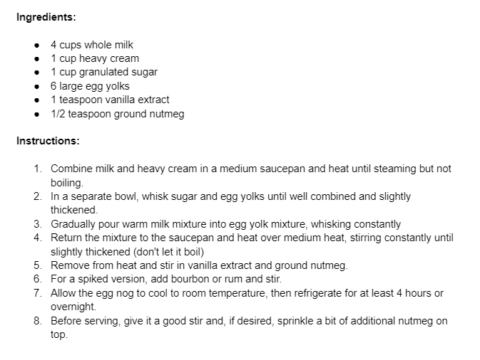

Growing up, my favorite time of the year was the Holidays. Yes, getting gifts and playing with new toys was a good time, but I think the thing that made the holidays most memorable to me was the atmosphere that accompanied it. I argue that if there is one snack/beverage that brings in that atmosphere the most, it’s eggnog. There is nothing like the creamy, milky, nutmeg beverage that expresses the holidays through its rich taste. I hope that this recipe is able to help bring the holiday spirit into your home, and that everyone is able to enjoy! - Sam Rafferty
